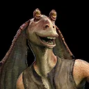
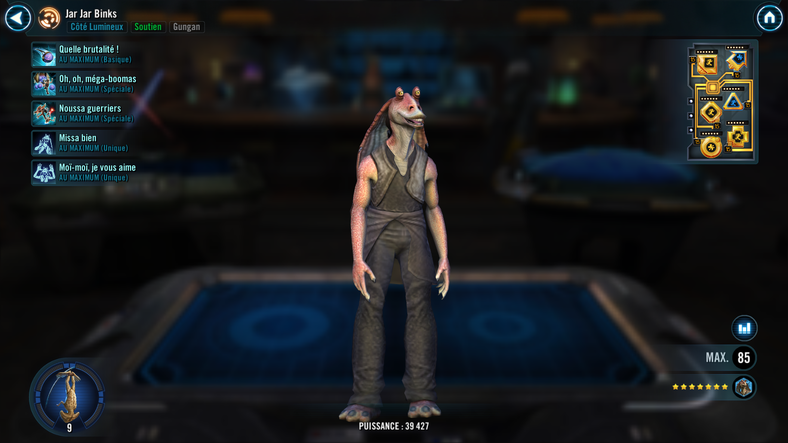
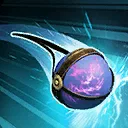
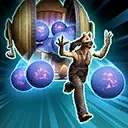
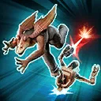

Jar Jar Binks
A Gungan Support who isn’t afraid to interject into the battle and offer his own brand of help, frustrating the enemy.

A Gungan Support who isn’t afraid to interject into the battle and offer his own brand of help, frustrating the enemy.


Deal Special damage to all enemies. On his turn 1 of 3 effects will occur:
- Inflict Deathmark for 1 turn to the healthiest enemy, which can't be resisted, if they have at least 3 debuffs
- The weakest Gungan ally gains Damage Immunity for 1 turn
- Gungan allies gain Tenacity Up for 1 turn
Additionally, this attack has a 0.01% chance to instantly defeat a random enemy, which can't be evaded (increased to 1% chance if there are any Separatist enemies). This attack can't be countered.

Deal Special damage to all enemies. If target enemy had Protection, Stun them for 1 turn, otherwise inflict them with 3 stacks of Expose for 1 turn. 0.01% chance all enemies lose all Turn Meter and are inflicted with Fear for 1 turn, which can't be copied, dispelled, prevented, or resisted (increased to 1% chance if there are any Separatist enemies). If all allies are Gungans, all enemies are inflicted with Plasma Residue for 1 turn, which can't be copied.
Plasma Residue: This character loses 100% Evasion; if this character becomes inflicted with Shock, deal reduced massive damage to all enemies with Plasma Residue then remove all instances of Plasma Residue
Omicron Boost: While in Grand Arenas and all allies are Gungans: Dispel bonus Protection and Protection Up on all enemies and they lose 5% Max Health and Max Protection (stacking), which can't be evaded, for the rest of the encounter, then inflict the target enemy with Protection Disruption for 1 turn. Plasma Residue can't be resisted. Whenever this ability is used, reduce the cooldown of all other Gungan ally's abilities by 1.

Deal Special damage to target enemy and a random enemy. Gungan allies recover 10% Protection. 0.01% chance all Gungan allies recover 100% Health and Protection and gain 100% Turn Meter and Foresight for 2 turns (increased to 1% chance if there are any Separatist enemies). All enemies are inflicted with 2 stacks of Frustration for 1 turn, which can't be copied.
If all allies are Gungans (excluding summoned allies), for each different debuff on target enemy or random enemy that could be copied and dispelled (excluding stacking debuffs), that debuff is dispelled and inflicted on that enemy for 1 turn. These debuffs can't be dispelled or resisted.
Frustration: Detrimental effects build based on the cumulative number of stacks:
1 or more stacks: Can't assist or counter attack
2 or more stacks: Whenever this character gains bonus Turn Meter remove 2 stacks of Recharge from enemy Shield Generator and Expose this character for 2 turns
3 stacks: Special abilities are unusable for 1 attack; remove all stacks of Frustration after this attack
At the start of battle, Jar Jar loses 75% Max Health and gains that much as Max Protection, and is inflicted with Deathmark until he receives damage or evades an attack. If the enemy leader is Separatist, at the start of the encounter, Jar Jar gains 50 Speed for the rest of the encounter. Jar Jar's debuffs can't be evaded and he can't be called to assist. Whenever another character gains Foresight, Jar Jar gains Foresight for 1 turn. Whenever Jar Jar gains Foresight he dispels it and Blinds himself instead for 1 turn.
Whenever Jar Jar evades a Basic ability, the enemy that missed is inflicted with a stack of Frustration for 1 turn at the start of the next turn, which can't be copied or resisted. Whenever an enemy Dazes, Staggers, or Stuns a Gungan ally, Deathmark Jar Jar until he receives damage or evades an attack.
If there is an active ally Shield Generator: Jar Jar has +1000% Evasion. Whenever a character gains bonus Turn Meter, Jar Jar has a 1% chance of gaining a bonus turn (increased to 10% if it is an enemy). Whenever this bonus turn occurs Jar Jar can't gain another bonus turn this way for 2 turns.
Omicron Boost : While in Grand Arenas and all allies are Gungans: Whenever the Shield Generator uses Plasma Pulse reset all of Jar Jar's cooldowns. Whenever a Gungan ally is Dazed, Staggered, or Stunned, they dispel it and gain Shield Up (25%) for 2 turns
Gungan allies have +75% Accuracy. If the enemy leader is Separatist, at the start of the encounter, all Gungan allies gain 50% Max Protection until the end of the encounter or Jar Jar is defeated for the first time.
At the start of the battle, if there are no Galactic Legends, all enemies are inflicted with a stack Frustration for 1 turn (increased to 3 stacks if they are Stealthed), which can't be resisted. If different enemies take consecutive turns, a random Gungan ally gains a bonus turn. Whenever Jar Jar misses an attack on his turn, all other Gungan allies assist (once per turn) dealing 50% less damage. Whenever the ally Shield Generator uses Plasma Pulse, Gungan allies ignore Protection for one attack.
If there is an active ally Shield Generator: Gungan allies can't drop below 100% Health while they have Protection and can't be instantly defeated.
Omicron Boost : While in Grand Arenas and all allies are Gungans: At the start of the battle, the ally Shield Generator gains 2 stacks of Plasma Shielding for every 3 Relic Amplifier levels Jar Jar has. Whenever a non-Gungan enemy gains Damage Immunity, all Gungan allies gain Damage Immunity for 1 turn. Whenever a Gungan ally gains a bonus turn from this ability they gain 5% Mastery until the end of the encounter.